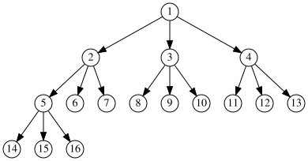

Basic Properties¶
In this chapter, we will examine trees - one of the most important concepts in graph theory that also has extensive applications in programming.
This section presents and proves the fundamental characteristics and properties of trees. By the end of this section, you should develop a strong intuition about tree structures and their basic properties.
class Node:
def __init__(self, value):
self.value = value # value
self.children = [] # children

Theorems and Lemmas Used in This Section¶
توجه
The original RST structure, hyphens, and whitespace are preserved per the requirements. The Persian text is translated while maintaining all formatting constraints.
Lemma 2.1.1¶
Lemma Statement: A graph with \(n\) vertices and \(m\) edges has at least max(1, n−m) connected components. If it has exactly n−m connected components, it is acyclic; otherwise, it contains a cycle.
Proof of Lemma: First, assume the graph has no edges. We then add edges to it in an arbitrary order.
We now prove that when adding an edge to the graph, the number of connected components decreases by at most one. If the number of components remains unchanged, the graph will contain a cycle. Suppose the edge being added connects vertices \(i\) and \(j\). If \(i\) and \(j\) belong to the same connected component, adding this edge does not change the number of components. Since a path already exists between \(i\) and \(j\), the new edge and this path together form a cycle. If \(i\) and \(j\) are in separate connected components, adding the edge merges the two components into one, reducing the number of connected components by one. Since no path previously existed between \(i\) and \(j\), adding this edge does not create a cycle.
Initially, with no edges, the graph has \(n\) connected components. Since each added edge reduces the number of components by at most one, the final graph has at least \(n−m\) connected components. If the final graph has exactly \(n−m\) connected components, this implies every edge addition reduced the number of components by exactly one. As proven earlier, such cases do not introduce cycles, meaning the final graph is acyclic. Conversely, if the graph has more than \(n−m\) components, at least one edge addition did not reduce the number of components, thereby creating a cycle. Hence, the graph contains a cycle.
According to Lemma 2.1.1, if a graph is acyclic (contains no cycles) and two of the three parameters (number of vertices \(n\), edges \(m\), or connected components \(Cc\)) are known, the third is uniquely determined. Specifically, for an acyclic graph:
\(n - m - Cc = 0\)
\(n\) = number of vertices
\(m\) = number of edges
\(Cc\) = number of connected components
Theorem 2.1.2
~~~~~~~~~~~~~
**Theorem Statement:** An n-vertex tree has exactly n-1 edges.
**Proof:** According to Lemma 2.1.1, if an n-vertex graph with m edges has no cycles, it has exactly n - m connected components. Since a tree has one connected component and no cycles, for an n-vertex tree we have n - m = 1. Therefore, m = n - 1.
1def add(a, b):
2 # Add two numbers
3 return a + b
Theorem 2.1.3¶
Theorem Statement: A tree with n vertices (n >= 2) has at least 2 leaves.
Proof: Consider the longest path in the tree. Since n > 1, the longest path must contain at least two vertices. Now, consider the two endpoints of this path. Each endpoint is connected to at most one vertex within the path—if it had more, a cycle would form, contradicting the definition of a tree. Since we have taken the longest path, the endpoints cannot have edges to vertices outside the path. Thus, it follows that the two endpoints of the longest path in the tree are leaves.
Theorem 2.1.4¶
Lemma Statement: If we remove a leaf from a tree, the remaining graph is still a tree.
Proof: We must prove the remaining graph is both connected and acyclic. Clearly, if a graph has no cycles, removing a vertex from it will not create any cycles. Now we prove it remains connected. Suppose removing the leaf disconnects the graph – then there must be at least 2 connected components.
The removed vertex (leaf) must have been connected to each of these components by at least one edge to keep the original graph connected. This would imply the leaf had a degree of at least 2, but a leaf by definition has degree 1. This contradiction proves the graph remains connected, hence it is still a tree.
Theorem 2.1.4 is highly practical because it shows that for induction-based problems on trees, removing a leaf allows transitioning to the induction hypothesis. Later in this book, you will encounter such problems.
Theorem 2.1.5¶
Prove that a graph which has one of the following properties is a tree:
A connected graph with n-1 edges.
A graph with no cycles and n-1 edges.
Between every pair of vertices, there exists exactly one path.
Solution:
a) If we prove the graph has no cycles, the theorem is proven. According to Lemma 2.1.1, if the graph had a cycle, the number of connected components would be greater than n - m, but in this graph it equals n - m. This contradiction proves the theorem.
b) Since the graph has no cycles, by Lemma 2.1.1:
n - m - Cc = 0 --> n - (n-1) = Cc --> Cc = 1
Thus, the graph is connected and has no cycles, hence it is a tree.
c) We must prove the graph is connected and acyclic. It is clearly connected because a path exists between every pair of vertices, meaning all belong to one connected component. Now we show it has no cycles. This is also evident: if a cycle existed, there would be at least two paths between any two vertices on the cycle.
Theorem 2.1.6
~~~~~~~~~~~~~~
**Theorem statement:** Every connected graph has a spanning tree.
**Proof:** As long as the number of edges in the graph has not reached n-1, we iteratively remove edges while proving the graph remains connected. According to Theorem 2.1.5, a connected graph with n-1 edges is a tree, thereby proving the theorem.
Therefore, until the number of edges becomes n-1, we perform the following step: Since the graph has more than n-1 edges and a single connected component (by Lemma 2.1.1), the graph contains a cycle. Select one such cycle and remove an edge from it. Clearly, the graph remains connected because the two endpoints of the removed edge are still connected via the remaining edges of the cycle. Hence, we can continue removing edges while maintaining connectivity until the number of edges reduces to n-1, thereby completing the proof.
Rooting a Tree¶
Suppose we orient the edges of a tree such that every vertex except vertex \(u\) has exactly one incoming edge (exactly one edge enters it), and vertex \(u\) has no incoming edges.
Initially, place a marker on vertex \(v\). At each step, if the marker is at vertex \(w\), move it to the vertex that has an outgoing edge to \(w\). If \(w \neq u\), this vertex is unique.
First, we can conclude that at each step, we visit a new vertex (since the tree has no cycles, and visiting a repeated vertex would imply traversing a cycle). Next, we can conclude that the process terminates in finite steps (because we visit a new vertex each time, and the number of vertices is finite). Finally, we can state that the marker will reach \(u\).
Intuitively, you can imagine the tree being suspended from \(u\). For every edge \(ab\), if \(a\) is at a higher "height" than \(b\), we orient the edge from \(a\) to \(b\). This orientation aligns with the one described above. For further intuition: In this orientation, vertex \(u\) has no incoming edges, so all edges adjacent to \(u\) must be directed outward from \(u\). We call the vertices adjacent to \(u\) the first layer. All vertices in the first layer have exactly one incoming edge (from \(u\)), so their other adjacent edges must be directed outward to form the second layer. Similarly, we define the third layer. Each vertex in the second layer has exactly one incoming edge from the first layer, so their remaining adjacent edges are directed outward to the third layer. This layering and orientation continue recursively. Consider edges from layer \(h\) to layer \(h+1\). Each vertex in layer \(h+1\) must have exactly one incoming edge, so exactly one edge from layer \(h\) enters it. Ultimately, we conclude that the initial orientation corresponds to the intuitive suspension of the tree from vertex \(u\).
{kind=link}

This process of suspending the tree from vertex \(u\) is also called rooting the tree at \(u\). In this case, we call \(u\) the root. As stated, every vertex except \(u\) has exactly one incoming edge in this orientation.
For a vertex \(b\), if its incoming edge is \(ab\), we call vertex \(a\) the parent of \(b\).
Two vertices with the same parent are called siblings.
Vertex \(u\) is an ancestor of vertex \(v\) if either \(u\) is the parent of \(v\) or \(u\) is an ancestor of \(v\)'s parent. In other words, the set of ancestors of a vertex consists of all its parents recursively.
The height of a vertex is its distance from \(u\) (the number of edges in the unique path between them).
For a specific vertex \(v\), the subtree of \(v\) is the set of vertices whose unique path to the root passes through \(v\). Intuitively, when the tree is suspended from \(u\), the subtree of \(v\) consists of all vertices "hanging" from \(v\).
Suspending (rooting) a tree is crucial because it will be used in algorithms later in this chapter. It is also currently the best way to intuitively visualize the structure of a tree: the tree has one root, which connects to neighboring vertices via branches, and those vertices further connect to new vertices via branches, and so on (as shown in the figure above).
This book is made by The Shaazzz contributors.
It is publicly available with cc-by-sa license.
Last updated at آوریل 19, 2025.
Rendered by Sphinx (4.3.2) and Minoo theme (Beta 0.9.7).